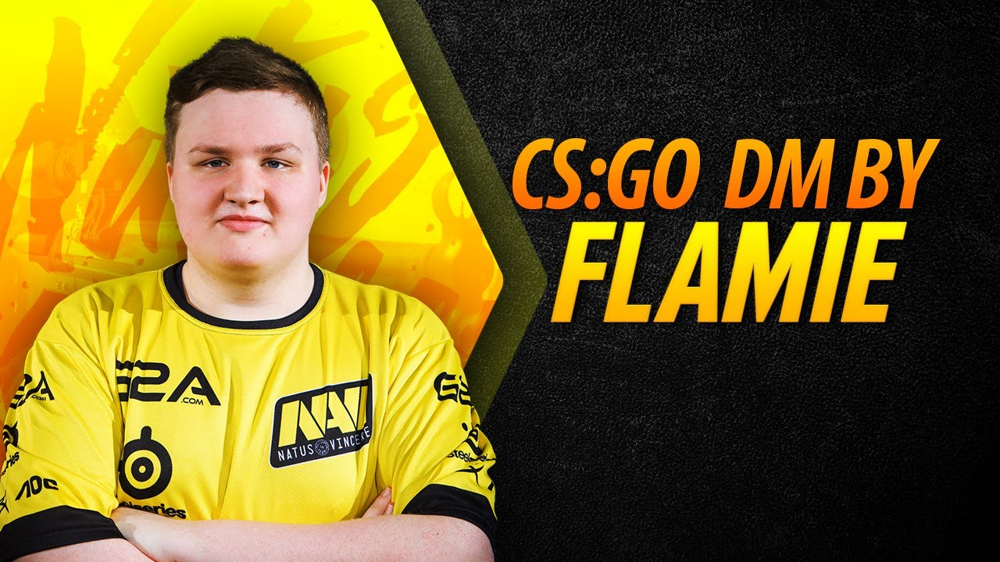
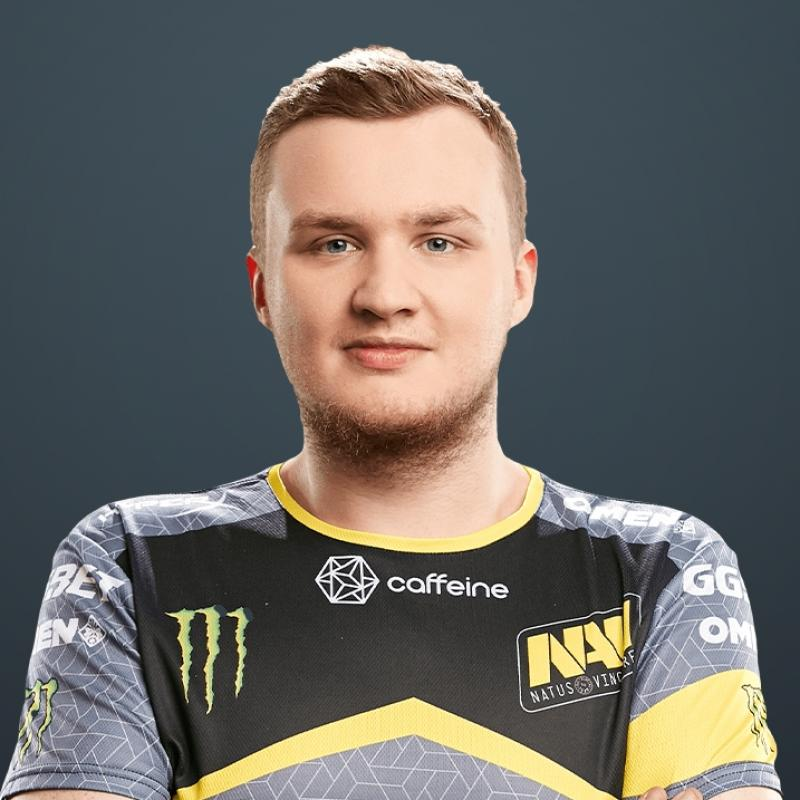

Главная
Главная
 Состав
Состав
 Автор
Автор
 Глав. Сайт
Глав. Сайт
Егор Васильев (Flamie)


Имя: Егор Васильев
Родился: 05.04.1997 (23 года)
Страна: Россия
Призовые: $ 571 880
Профессиональный игрок в CS:GO.
Егор является одним из самых молодых игроков российской профессиональной сцены по CS:GO. Еще в Counter-Strike: Source он выступал за такие коллективы, как PinCho, TEAM46, t44 и zNation. С переходом на CS:GO начинал свой путь в USSR Team, откуда в июле 2014 года попал в dAT Team. Под руководством именитого украинского капитана Андрея «B1ad3» Городенского раскрыл свой потенциал игрока. Несмотря на юный возраст, успел сыграть за все три топовые команды в СНГ — dAT Team, HellRaisers и Natus Vincere. В составе последних добился мирового признания и даже вошел в топ-20 лучших игроков по версии hltv.org за 2015 год.
Считается одним из лучших рифлеров в мире, а возраст делает Егора одним из перспективнейших СНГ-игроков на сегодняшний день.